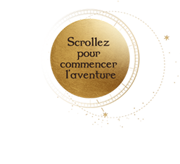
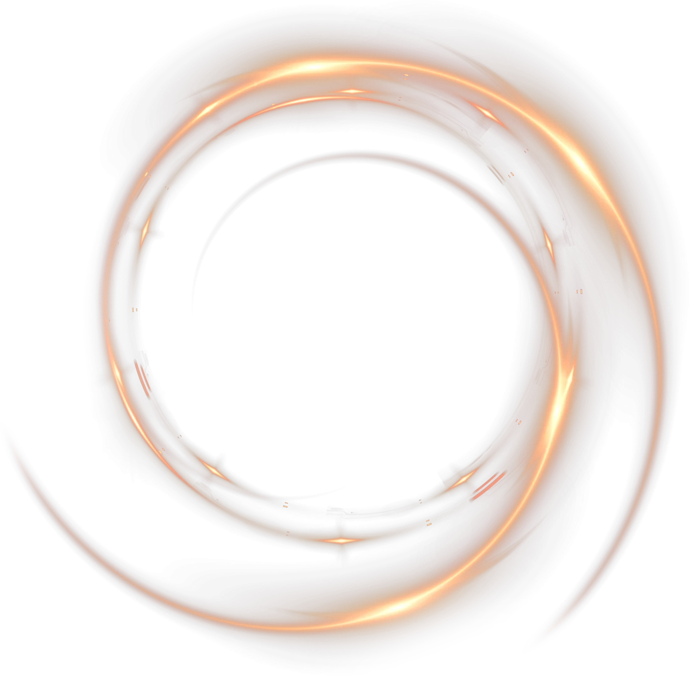

vous invite

Dessinez sur l'écran
pour révéler votre magie
à un nouveau
rendez-vous

Cliquez et
maintenez
pour révéler
Rendez-vous
sur la Bon'App,
le 31 Août 2026,
11:11
Le compte à rebours est lancé !
Soyez prêts !